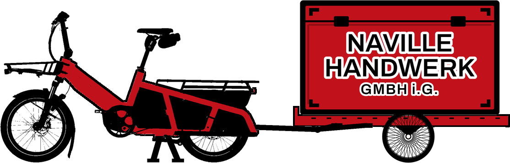

Damit du weisst, woran du bist: Grün heisst, es kommt dir als Einsatzbetrieb zugute. Rot heisst, es nützt eher mir oder ist eine Grenze – damit es keine Enttäuschungen oder Überraschungen gibt.
Kein Dauerzustand, sondern ein sauberer Zyklus: abrufbar, wenn du mich brauchst; weg, sobald dein Team wieder steht.
Wie die Reserve im Aggregat — verfügbar, wenn's bei dir eng wird.
Ausfall, Auftragsspitze oder Teilzeit-Lücke — ein Anruf genügt.
Als zusätzliche Fachkraft in deinem Team, top ausgerüstet.
Steht dein Team wieder, gehe ich — ohne schlechtes Gewissen.
Passt das zu deinem Bedarf? Dann melde dich.
info@naville-handwerk.ch
Der Notstromer für Berner Elektrikerfirmen